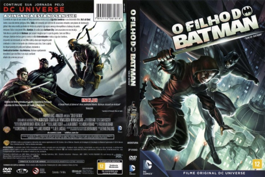

Outro Título:Son of Batman
País:United States, 74 minutos
Idiomas falados:Espanhol, Inglês, Português
Gênero(s):Animação, Ação, Aventura
Diretor(s):Ethan Spaulding
Escritor(es):Joe R. Lansdale
Codec:MPEG-2 (DVD)
Número: 5846


Certificado:12
Sinopse:
Quando Batman descobre que tem um filho, Damian, que é neto de Ra’s Al Ghul, ele decide criar o menino, para evitar que ele se transforme no assassino que estava preparado para ser.
Elenco:
Tipo de mídia: DVD5,
Legendas: Inglês, Português, Sem Legendas
Alugado: Não
Tela: Anamorphic Widescreen